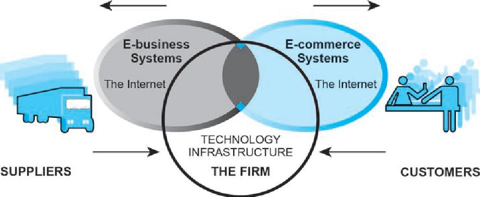
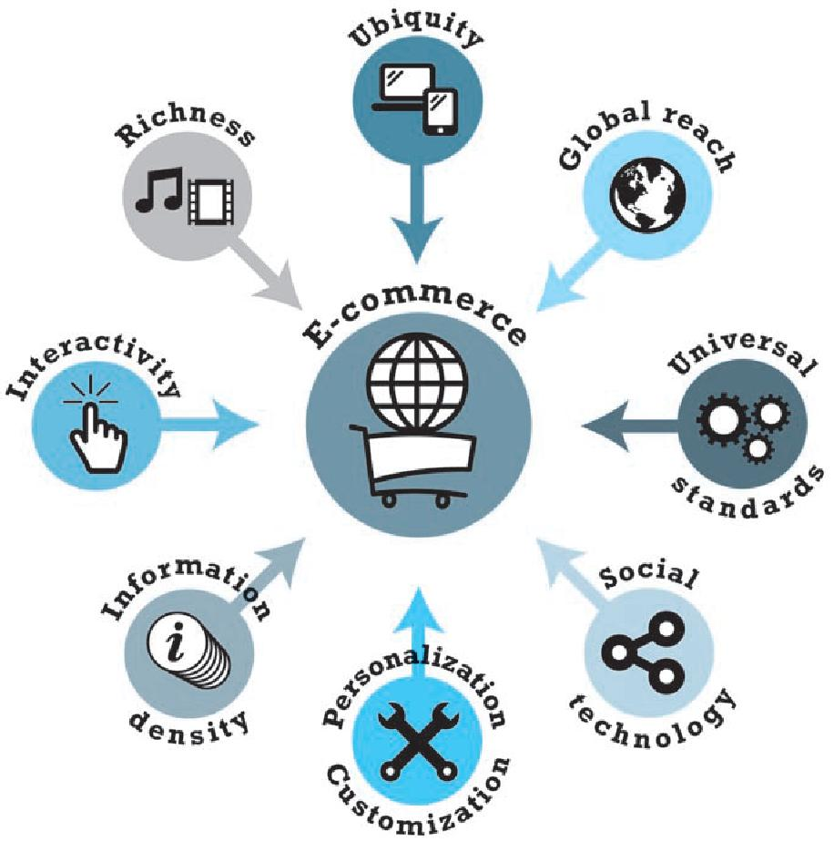

ΤΕΧΝΟΛΟΓΙΕΣ ΔΙΑΔΙΚΤΥΟΥ και ΗΛΕΚΤΡΟΝΙΚΟ ΕΜΠΟΡΙΟ
Ηλεκτρονικό Εμπόριο (E-commerce)
Ηλεκτρονικό Εμπόριο: Η διαδικασία αγοράς, πώλησης, μεταφοράς ή ανταλλαγής προϊόντων, υπηρεσιών και/ ή πληροφοριών μέσω δικτύων υπολογιστών, κυρίως μέσω του Διαδικτύου και ενδοδικτύων.
Τύποι προϊόντων ΗΕ
- Υλικά Αγαθά (π.χ. βιβλία, κινητά τηλ.) και Ψηφιακά προϊόντα (άυλα αγαθά π.χ. mp3)
- Υπηρεσίες (π.χ. χρηματοοικονομικές, τραπεζικές, ψυχαγωγικές, δημόσιες, τουριστικές)
- Συνδυασμός των ανωτέρω
Ηλεκτρονικό Επιχειρείν (E-business)
Ευρύτερος όρος από το η-εμπόριο. Περιλαμβάνει:
- Αγορά και πώληση αγαθών και υπηρεσιών
- Εξυπηρέτηση πελατών
- Συνεργασία με επιχειρηματικούς εταίρους
- Η-εκπαίδευση
- Η-συναλλαγές μέσα στον ίδιο τον οργανισμό
- Υποστήριξη της διοίκησης (πχ πρόσληψη προσωπικού, ενοικίαση χώρων)
- Μάρκετινγκ

Εφαρμογές που σχετιζονται με η - εμπόριο:
- Αλυσίδα εφοδιασμού (supply chain) και εφοδιαστική (logistics)
- Τοπικά και διεθνή συστήματα πληρωμών
- Διαχείριαη περιεχομένου επιχειρήσεων
- Ομαδική αγορά Group buying (Groupon)
- Εκτυπώσεις on demand (κατ'αίτηση)
- Αυτόματη βοήθεια online (σε απευθείας σύνδεση)
- Newsgroups
- Παρακολούθηση αγοράς και παραγγελίας (online)
- Τραπεζικές συναλλαγές (Online banking)
- Σουίτες office (Online office suites)
- Λογισμικό για καλάθι αγορών (Shopping cart software)
- Teleconferencing (π.χ.: τηλε-εκπαίδευση
- Ηλεκτρονικά εισιτήρια (Electronic tickets, ή e-ticket)
- Κοινωνικά δίκτυα (Social networking)
- Instant messaging
- Pretail (Προ - πώληση)
- Digital Wallet (ηλεκτρονικά πορτοφόλια)
Η εξέλιξη στην πραγματική αγορά
- 2003: Amazon.com Ανακοινώνει κέρδη
- 2003: Bossgoo B2B marketplace Ιδρύεται στην Κίνα
- 2004: DHgate.com Ιδρύεται στην Κίνα ως online πλατφόρμα συναλλαγών
- 2007: Business.com Αγοράζει τη R.H. Donnelley για $345 εκ.
- 2009: Zappos.com εξαγοράζεται από την Amazon.com για $928 εκ.
- 2010: Groupon απορρίπτει προσφορά $6 δισ. από Google.
- 2011: Quidsi.com, εξαγοράζεται από την Amazon.com για $500 εκ. και εξαγορά χρεών κ.λπ.
- Η GSI Commerce, με ειδίκευση στην ανάπτυξη και λειτουργία ηλ. καταστημάτων εξαγοράζεται από την eBay για $2.4 δισ.
- 2014: Η Overstock.com διαχειρίζεται πωλήσεις πάνω απο $1 εκ. σε Bitcoin
- Στις Η.Π.Α. το η-εμπόριο αγγίζει τα 300 δισ.
- Η Alibaba Group δέχεται προσφορά εξαγοράς $25 δισ.
Μοναδικά χαρακτηριστικά της τεχνολογίας του Ηλεκτρονικού Εμπορίου και η σημασία τους
Υπάρχουν 8 χαρακτηριστικά αυτής της τεχνολογίας που κάνουν το e-commerce ξεχωριστό.
- Πανταχού παρούσα (Ubiquity) — Υπάρχει παντού και κάθε στιγμή. Κάνει εύκολη την αγορά από τον επιτραπέζιο υπολογιστή, το σπίτι, το γραφείο ακόμα και από το αυτοκίνητο
- Παγκόσμια πρόσβαση (Global reach) — Επιτρέπει συναλλαγές ανάμεσα σε κράτη, πολιτισμούς και οικονομικά συστήματα χωρίς τα εμπόδια που υπήρχαν στο παραδοσιακό εμπόριο
- Παγκόσμια πρότυπα (Universal standards) — Η χρήση παγκόσμιων προτύπων παραμερίζει τις διαφορές ανάμεσα στις τεχνολογίες που κάθε κράτος χρησιμοποιούσε
- Αφθονία (Richness) — Επιτρέπει στον έμπορο να στείλει μηνύματα και ενημερωτικά δελτία στους πελάτες του με τρόπους που δεν ήταν δυνατοί στο παραδοσιακό εμπόριο
- Διαδραστικότητα (Interactivity) — Επιτρέπει τη διαδραστική επικοινωνία ανάμεσα στον πωλητή και αγοραστή
- Πυκνότητα πληροφορίας (Information density) — Η ποσότητα και η ποιότητα της πληροφορίας γίνεται πιο διαχειρίσιμη όσο αφορά τη συλλογή, την αποθήκευση, την επεξεργασία, την διαμοίραση κ.λπ.
- Εξατομίκευση και Προσαρμογή (Personalization and customization) — Η αύξηση της πυκνότητας της πληροφορίας επιτρέπει στους πωλητές την καλύτερη στόχευση του αγοραστικού κοινού μέσα από την εξατομίκευση και προσαρμογή
- Κοινωνικά δίκτυα (Social technology) — Προσφέρουν ένα μοντέλο επικοινωνίας «πολλά προς πολλά» και ένα μεγάλο ακροατήριο (ομάδα-στόχος) για τους πωλητές

Το Web 2.0
Ένα σύνολο από εφαρμογές στο διαδίκτυο που αναφέρονται ως web 2.0 έχουν αποκτήσει μεγάλο ακροατήριο και παρουσιάζουν μεγάλες ευκαιρίες για κέρδη στο Η.Ε.. Τέτοιες εφαρμογές είναι τα κοινωνικά δίκτυα, εφαρμογές για διαμοίραση εικόνων και βίντεο, πλατφόρμες blog κ.λπ..
Τα χαρακτηριστικά του Web 2.0 περιλαμβάνουν.
- Ταξινόμηση (Folksonomy)- Η ελεύθερη ταξινόμηση της πληροφορίας επιτρέπει στους χρήστες να επιλέξουν, να ταξινομήσουν και να αναζητήσουν πληροφορίες
- Πλούσια εμπειρία (Rich User Experience) – Δυναμικό περιεχόμενο που αντοποκρίνεται στον χρήστη
- Συμμετοχή χρήστη (User Participation) – Ο χρήστης συμμετέχει μέσω αξιολόγησης, παρατηρήσεων, σχολίων και επιτρέποντας σε άλλους χρήστες να έχουν πρόσβαση στη δική του συμμετοχή
- Συνδρομητικές υπηρεσίες (Long tail) – Αγορές υπηρεσιών σε μηνιαία για παράδειγμα βάση όπως συνδρομές κ.λπ.
- Λογισμικό ως υπηρεσία (Software as a service) – Δίνει περισσότερες δυνατότητες στους προγραμματιστές αφού μπορούν να συνδυάσουν δεδομένα και λειτουργίες από πολλές διαφορετικές πηγές (συνήθως μέσω api)
- Ευρεία συμμετοχή (Mass Participation) – Η παγκόσμια πρόσβαση στο διαδίκτυο διαφοροποιεί τα ενδιαφέροντα των χρηστών και γίνεται πιο προσανατολισμένο στον χρηστη